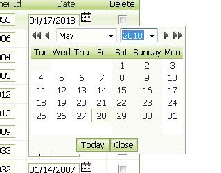

Web Applications - Date Picker
In previous updates support was added for customizing the day and month names in the calendar. Now, you can customize the day that the week starts on. In the Grid Properties there is a new property for 'First day of week'. By default this is set to 1 ( for Sunday). If you want the week to start on Monday, set this property to 2. The screen below shows how the calendar looks when the first day of the week is set to 3 (Tuesday).